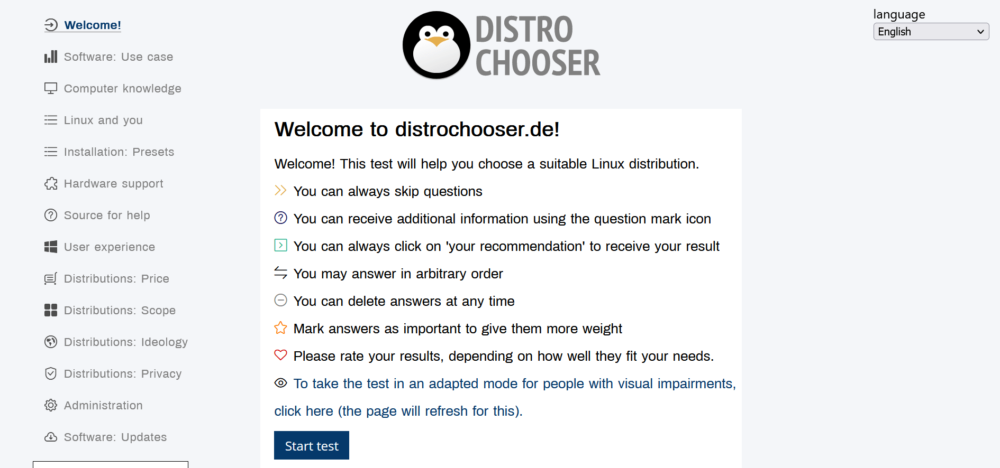

3 Awesome Tools That Find Your Perfect Linux Operating System
Hey! I recently wrote an article on some resources to help you find the perfect Linux distribution for you. Ideal for you, based on your preferences, experience and tasks that you set for yourself (if you have not read this article, I recommend that you read it here).
Today I want to talk about the tools that will help you find the perfect distribution. I did a little research, followed a few days of thematic communities on Reddit and even Pinterest (I was surprised that they discuss something other than knitting and drawing) and made a small list, based on which you yourself do not have to choose a distribution. All you have to do is dig a little deeper and remember your experience. I'm going to pick.
OnWorks
Once upon a time (in fact, quite recently) there was such a tool as distrotest, which made it possible to test any distribution without downloading it, right in your browser. For many (including me) this was a disappointment, but as I always say, there are alternatives everywhere. OnWorks has become an alternative to the departed distrotest. And it's a really good alternative.


OnWorks - Sample
There are a huge number of distributions on OnWorks that you can test out. Of course, complex operations cannot be done, but it will be very convenient to feel what it is like, to see what the operating system is like. Again, you don't need to download anything, it all happens through your browser. OnWorks provides a wide range of distributions and, unfortunately, not all of them are free. After some time, the session simply ends, your test period disappears, and you are redirected to the main page for choosing an operating system. The paid version costs $5 per month.

OnWorks - Prices
I always say it's your business to spend the money, not mine, but personally I don't think even $5 is worth it. The speed of operating systems leaves much to be desired, everything is terribly slow. Moreover, before starting the operating system, you need to wait almost a minute until the connection with the cloud is established and everything is loaded. Considering the fact that the session time is also limited, you will wait as long for the operating system to load as you test the distribution. I don't think the paid subscription is worth it. But the free version is definitely worth a look. If you need to quickly test something, double-check your choice, or just look at the interface, then this is what you need. For these purposes, I recommend it.
How to Prepare for Interview in IT Easily | Best Tips and Advice
Today, I want to talk about job interviews. Now I am actively interviewing for various positions in various companies and startups doing business...
Continue readingLinuxContainers
This resource is suitable for more advanced users. What if I told you that it would be possible to test any distribution kit directly through the command line of your terminal? The guys from LinuxContainers also thought about it and implemented their project. Their product called LXD is essentially a virtual machine manager. If you have ever launched and worked with Virtual Box, then you know what I mean.

LinuxContainers - Installation
LXD manages images for many Linux distributions (for a complete list, watch this (https://us.lxd.images.canonical.com/)). In my opinion, the potential is huge. What is important here for you and me is the fact that you and I can connect to the LXD container of any supported distribution via the console.
I mentioned that for a beginner, this is probably not the best option, just because of the command line. You will not see here the familiar interface as in the previous resource, you will not be able to move the mouse and click on the icons. Presented here is, I would say, the classic use of Linux - just the command line.
Should you pay attention to this resource? - definitely, at least because of the huge range of distributions. Moreover, if you decide to dive into the administration of Linux systems and disassemble distributions in more detail than to select them by design, then learning to administer with this resource is gold in the desert, which, unfortunately, I did not know at one time.

LinuxContainers - Distros List
Is Getting Paid in Crypto a Good Idea? My Real Experience
I want to tell you about my experience of receiving wages in cryptocurrency. Share my story, the difficulties that I encountered...
Continue readingDistrochooser
In order for you to be able to somehow decide among hundreds of distributions, you need to limit the list of your candidates to at least 5-7. Distrochooser will help you with this. This is a very simple site where, based on your personal preferences, your experience with Linux systems, even your experience with the command line, they will pick up a few ideal distributions.
Distrochooser - Interface
The site is a regular test, whereby answering questions, you gradually remove options one by one. The test is quite objective, it's not an absolute random like What Linux Distro Are You, where you are asked what is your favorite color when choosing a distribution.
The resource is very popular, I already wrote about it in my article, by the way, it is also often talked about on Reddit when newbies ask about the ideal distribution for themselves. The site is really good. Before diving into the resources I've mentioned so far, I recommend visiting this site first. So you will not get lost among the general diversity and variations of distributions, but will know exactly what you are looking for, why you need it and why this particular distribution is right for you.
Owlhowto (Bonus)
A small addition that I decided to add at the last moment. This is not exactly a resource to help you choose the perfect distribution for you, but it will help you with technical issues related to administering your distributions or troubleshooting installations.

OwlHowTo - Main Page
At its core, this is a regular blog, where the authors are simple volunteers working in the field of administration. I am sure that any of the readers can become the author. Of course, the resource will not replace Stack Overflow or the documentation (which I strongly recommend reading), however, I believe that including this resource in your learning process would be very useful and effective.
The tutorials here are very detailed and perfect for beginners. Each step in troubleshooting is described to the smallest detail. The authors practically do everything for you, and you just sit and happily watch. In short, an excellent addition to the educational process. The resource is not so popular, which is a pity.
Conclusion
In this article, I've listed three (+1) great resources to help you decide which distribution to use for your studies, work, or just everyday tasks (maybe you're just tired of the endless automatic Windows updates). I hope my article helped you. If you have any additions or criticisms, I'm always happy to have discussions on the Reddit community. I will wait for you there!